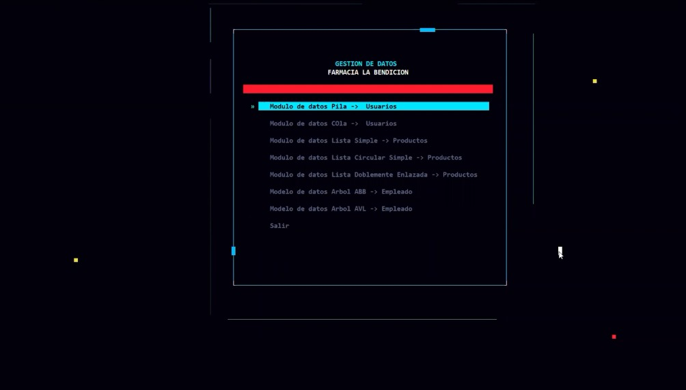
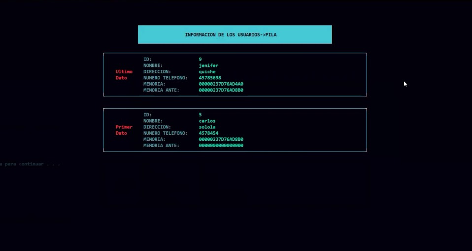
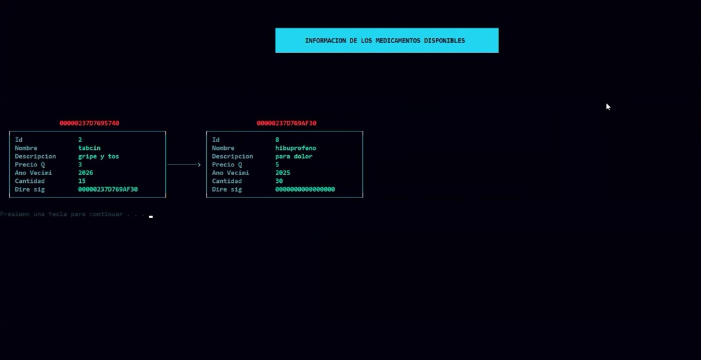
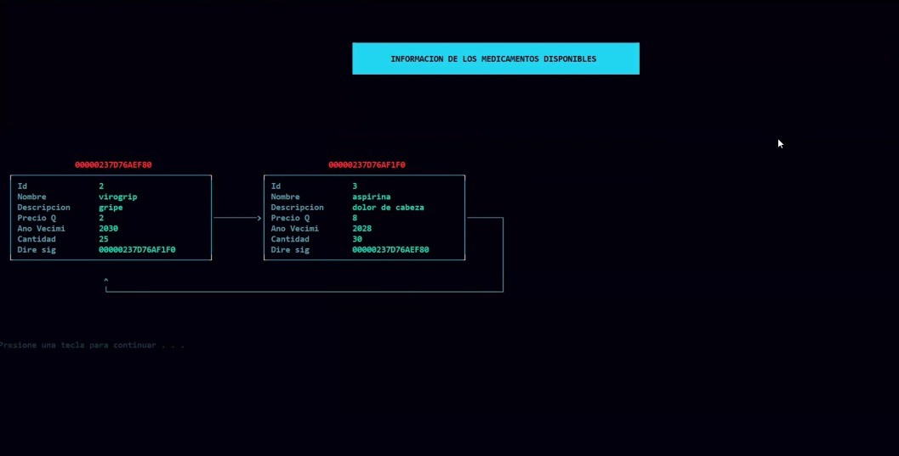
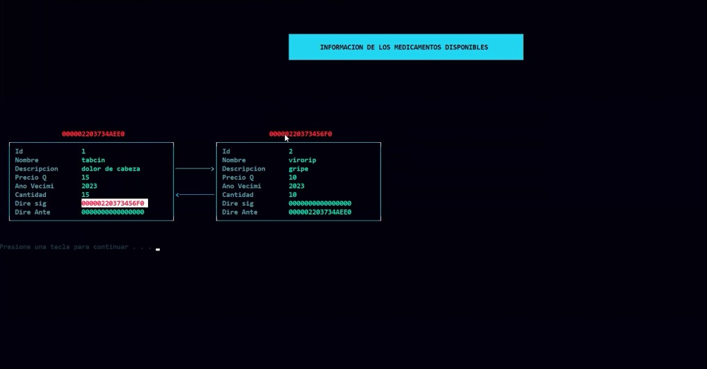
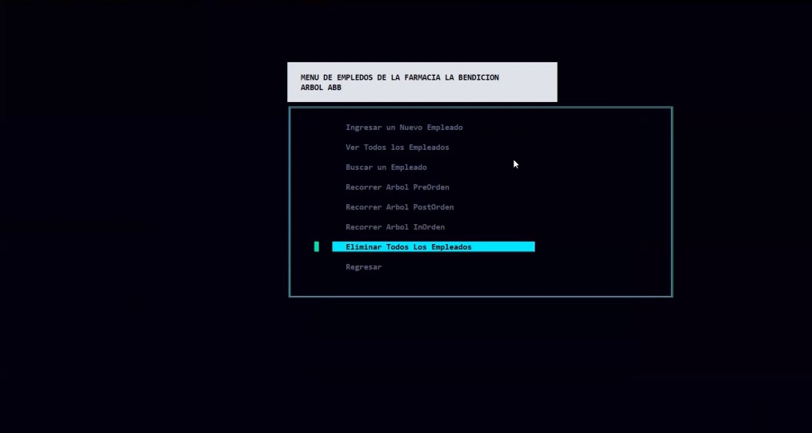
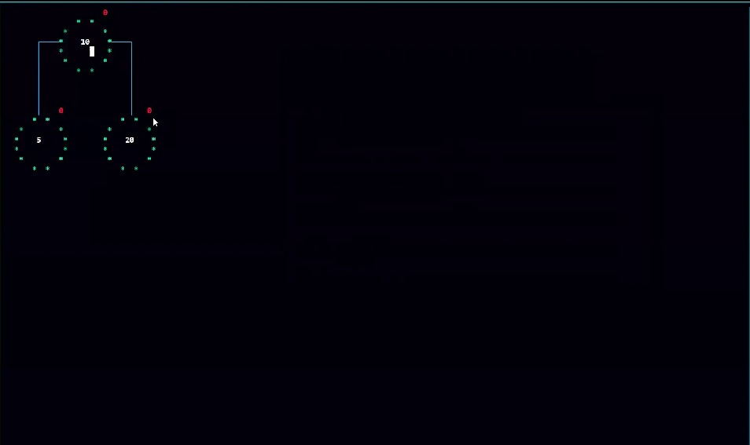
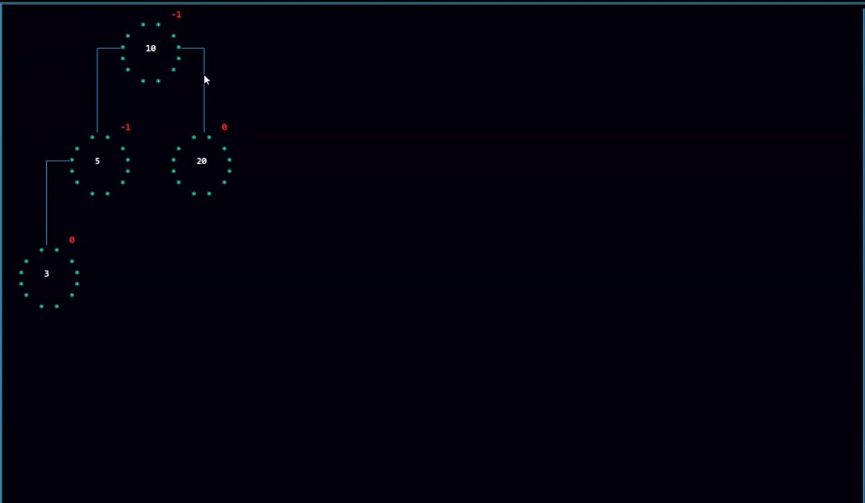

Farmacia
Este proyecto nos muestra la creación de un software sobre una farmacia haciendo uso de listas, pilas, colas, y arboles ABB como también AVL.
Inicio
interfaz de inicio del proyecto

Menú
En esta interfaz nos muestra las funciones del programa

Pila
En esta interfaz nos muestra el funcionamiento de pila

Colas
En esta interfaz nos muestra el funcio de colas

Lista Circular
En esta interfaz nos muestra el funcionamiento de la lista circular

Lista Doblemente Enlazada
Este es la interfaz nos muestra el funcoinamiento de las listas doblemente enlazada

Recorrido de Arboles
Este es la interfaz nos muestra el recorrido Pre-Orden, In-Orden y Post-Orden de los Arboles ABB y AVL/p>

Arbol ABB
Este es la interfaz nos muestra el recorrido Pre-Orden, In-Orden y Post-Orden deL árbol ABB/p>

Arbol AVL
Este es la interfaz nos muestra el recorrido Pre-Orden, In-Orden y Post-Orden deL árbol AVL/p>